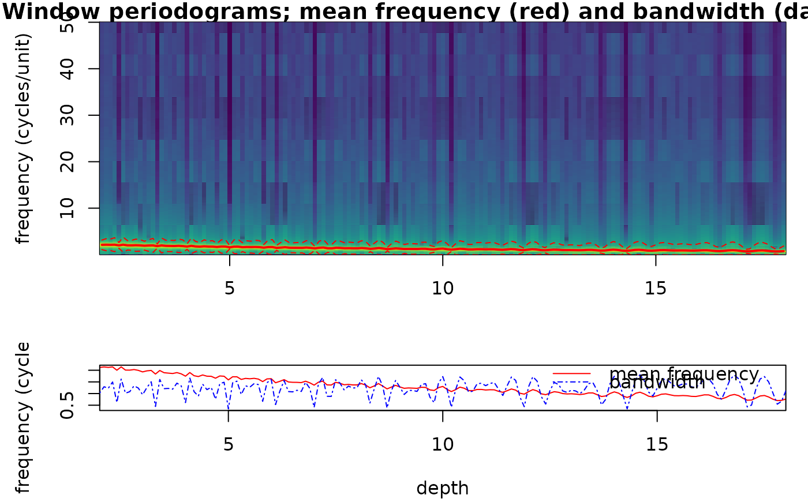

Plots the mean frequency and bandwidth (and, if available,
the bandwidth trend and the sedimentation-rate estimate) returned by
spectral_moments, as in the Acycle spectral moments GUI.
Translated from the plotting part of Acycle v3.1 SpectralMomentsGUI.m
(Mingsong Li).
Arguments
- sm
Spectral moments result to plot: the list returned by
spectral_moments(itsresulttable, andspectraandanchorwhen present, are used). Required (Default=NULLgives an error).- x_lab
Label of the depth/time axis (character).
Default="depth".- y_lab
Label of the frequency axis of the moments panel (and of the image when
yaxis = "frequency") (character).Default="frequency (cycles/unit)".- sr_lab
Label of the sedimentation-rate axis of the sedimentation-rate panel, drawn when
smcontains a sedimentation-rate estimate (character).Default="sed. rate".- image
Draw the periodograms of all windows as an image (frequency or period against depth, the evolutive spectrum the moments are computed from) above the moments, with the mean frequency and bandwidth overlain (logical, TRUE or FALSE); only drawn when
smcontains the window spectra.Default=TRUE.- yaxis
Spectral axis of the image (character):
"frequency"(cycles per unit, linear axis) or"period"(log2 axis).Default="frequency"(the first element ofc("frequency", "period")).- scale
Colour scale of the image (character):
"log"(log10 power, floored at the 2nd percentile of the positive power),"quantile"(histogram-equalised, 64 classes) or"linear".Default="log"(the first element ofc("log", "quantile", "linear")).- palette
Name of a
hcl.colorspalette for the colour scale, a character string, for example"viridis","Plasma","Inferno","YlOrRd","Spectral","Blue-Red","Zissou 1"; rungrDevices::hcl.pals()to list all 115 names. Low values get the first colour of the palette. Names of the viridis family ("viridis","magma","inferno","plasma","cividis","rocket","mako","turbo") give the colours of the viridis package, as in the wavelet plots.Default="viridis".- freq_max
Highest frequency shown in the image, in cycles per unit of depth/time (numeric, > 0);
NULLshows all frequencies.Default=NULL.
References
Sinnesael, M., Zivanovic, M., De Vleeschouwer, D., Claeys, P. (2018). Spectral moments in cyclostratigraphy: advantages and disadvantages compared to more classic approaches. Paleoceanography and Paleoclimatology, 33, 493-510. <doi:10.1029/2017PA003293>
Examples
# \donttest{
depth <- seq(0, 20, by = 0.01)
proxy <- sin(2 * pi * depth / (0.4 + 0.02 * depth))
sm <- spectral_moments(data = cbind(depth, proxy), window = 4, step = 0.1)
plot_spectral_moments(sm)

# }